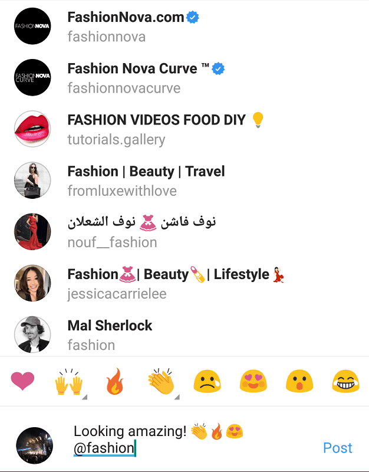
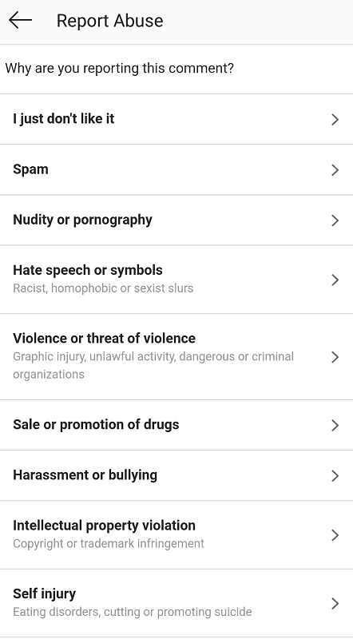
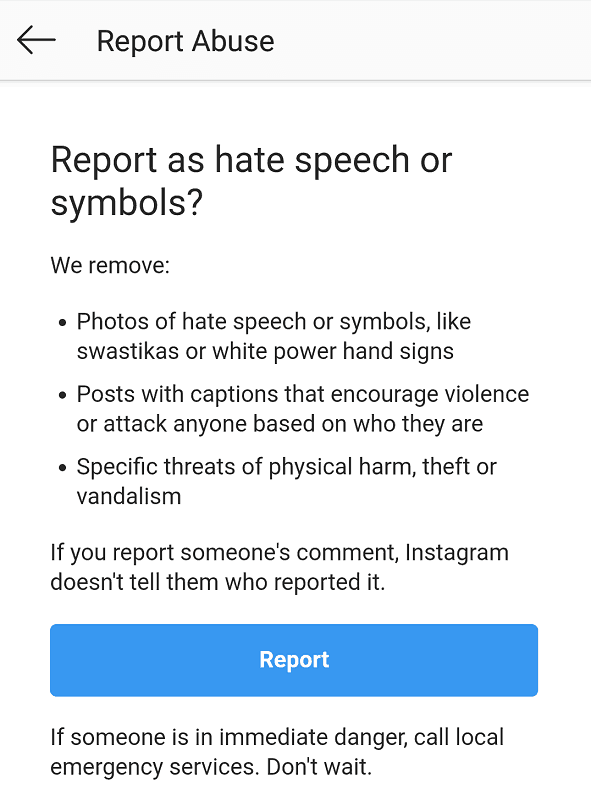

We all measure our Instagram engagement by the ‘likes’ we rack up. That little heart symbol has become a currency on the platform – a way of giving posts value, and a gesture of appreciation.
But what about Instagram comments? As with the likes, comments also point to the reach and success of a particular post. In fact, they often provide more genuine value. A well-written comment shows that the viewer was actively engaged in your post; rather than mindlessly scrolling through their feed, double-tapping every other photo.
Instagram comments should play a vital part in anyone’s content strategy. Below, we outline how they work on the platform, and how you can use them to boost overall engagement.
How Do Instagram Comments Work?
Leaving Instagram comments is as simple as leaving a ‘like’.
Right next to the heart symbol under every Instagram photo is a speech bubble icon. Tap this to type up a comment on the post. When you’re done, simply hit the blue “Post” button next to your text.
Courtesy of arianagrande (Instagram account).
And that’s it! You can even add emojis, hashtags, and tag other users if you wish. As with Instagram captions, you’re only able to add up to 30 hashtags. You can also include up to 5 “@” mentions in a single comment, according to the Instagram Help Center.

You can also leave a “like” on comments by tapping on the small heart icon right next to one. Comments display the number of likes it has underneath the actual text.
Courtesy of arianagrande (Instagram account).
To reply to a comment, just hit the “Reply” function underneath it. This tags the user in your comment ,and creates a new thread.
Courtesy of arianagrande (Instagram account).
Why Should I Leave Instagram Comments?
Just like ‘likes’, comments are a way of engaging with other users in your community. As mentioned, they’re arguably a more substantial way of connecting with people, as a comment not only boosts the ‘value’ of a post by adding to a ‘like’ count, but allows one to ask questions, share their input, or simply start a conversation.

As such, Instagram comments are effective in getting users to interact back. The platform is a social one, after all; users are generally more than happy to respond in kind, especially if your comment offers value of its own.
By interacting with users in this authentic manner, they’re also more likely to visit your content. If your feed interests them, they’ll probably drop off a few comments themselves – giving your content a nice boost in engagement.
How to Delete Comments on Instagram
While the feature offers plenty of benefits, they can also encourage problematic behavior.
Just as users can use Instagram comments to show appreciation for others’ posts, they could also use them for slander or harassment.

Courtesy of Techish Kenya.
Others take the opportunity to spam comment threads; this can either be done through a bot or through copying and pasting text that offer no real value.
If this starts to clutter your post, you can always choose to delete them. To delete comments on Instagram, simply press and hold on the comment and hit the white trash can icon at the corner of your screen.

And that’s it! The comment is permanently deleted from the post.
How to Report Comments on Instagram
Instagram takes harassment or bullying seriously on the platform. If comments turn bothersome to downright distressing, it’s best to report the incident altogether.
To report a comment, press and hold on the user’s text, and tap on the exclamation mark icon next to the one of the trash can.
Two options should pop up: one to report the comment, and another to restrict the user from seeing your profile.
Tapping the first option will pull out a list of possible reasons for why you’re reporting the comment.

Choose the one the best fits your situation, and hit the blue “Report” button. Doing so will not notify the user you’ve reported them.

How to Search Through Your Instagram Comments
Accessing your Instagram comments is easy – just tap on the “View All Comments” option underneath your post.
New comments will also pop up in your notifications, with an indicator of when they were posted. You can tap on these to view the full text and reply as you wish.
However, you may want a more efficient way to search through your Instagram comments. For this, you’re going to need a third-party app. A notable tool that performs this job well is the Instagram marketing platform, Later.
Using Later to Search Through Your Instagram Comments
While primarily known for its auto-scheduling benefits, Later also provides a feature known as the “Conversations” inbox.
This tool organizes all your Instagram comments into a real-time feed, displaying the most recent ones at the top. This helps you keep track of all the comments your content receives, even if some are left on older posts.

Search through your Instagram comments with Later Conversations. Courtesy of Later.
This is particularly helpful for businesses who manage an overwhelming number of customer inquiries left on their posts. Through Conversations, you get the full, archived comment history between you and another user, so you don’t miss details on important exchanges.
To search through your Instagram comments, the inbox offers a search field above all your archived conversations. Simply enter a keyword to pull up the comment thread you’re after. You can also interact with your comments straight from the platform.
Search through your Instagram comments with Later Conversations. Courtesy of Later.
Later even suggests searching “?” to quickly search through all your existing user inquiries!
The best part is – all this can be done through a desktop computer, helping you sift through your comments as efficiently as possible. You can also reply to each one as you would on the regular Instagram app.
How Do I Encourage More Comments?
Since comments do well to boost your profile engagement, you’ll want to encourage more of them on your content.
There are plenty of creative ways to achieve this, though we’ve outlined some of the most common (and effective!) ones below.
Interactive Posts
Interactive Instagram posts are those that directly ask the user to ‘like’ or leave a comment. There has to be good reason to do so, of course; content that uses this approach typically take on the form of a quiz, query, or a fill-in-the-blank type of post.
Australian juice brand, Boost, uses this very strategy in their post below:
Courtesy of boost_juice (Instagram account).
Users are invited to answer the question in their comment section, giving that instant boost of engagement. This also works to draw in more viewers – the more comments a user sees on a post, the more they’ll see it as a post worth engaging with.
Another user, @scorpiosforever, uses a similar method of getting users to “fill in the blanks”.

Courtesy of scorpiosforever (Instagram account).
Challenging users with quiz-related activities is also a fun way of invoking quick responses.
If you’re looking to gain more organic comments on your content – give your viewers a reason to leave them! While this can work by simply posting outstanding, quality images (or videos), sometimes you may need to directly invite action.
Contests
Another way of gaining more comments on your posts is to host contests.
These not only rack up the comment count when done right – but your overall engagement for the post.
Since contests are an all-too common strategy on Instagram, hosting a successful one will take a bit of thought and creativity. Each one shares a common goal, however – to get users interacting on your post. Like with any contest, you’ll need an incentive to hook viewers in.
Brands typically offer free products or services in exchange for engagement. Bessie + Barnie, a business dedicated to selling beds for pets, does this with their latest Instagram contest in the post below:
Courtesy of bessieandbarnieofficial (Instagram account).
The rules for their contest/giveaway are easy – follow their account, tag three friends in the comments, and like the post. This grants their profile that sharp boost in engagement, while drawing even more viewers in with the mention tags. It’s a win-win on both ends: platform exposure for the brand, and a freebie for those participating.
Giveaways are the most common type of Instagram contest, as they’re easy to carry out and provide immediate results. Much like a raffle, the “winner” is randomly chosen among the commenters.
Using Services to Gain More Instagram Comments
Sometimes that boost in engagement comes with a little outside help. You can opt to increase your comments in more subtle ways, such as through the services these tools provide below.
Kenji
A well-loved Instagram marketing tool by many, Kenji is an AI-powered bot that sets your liking activity on auto-pilot.
Upon signing up, you’ll be asked to specify hashtags commonly used by those in your niche. You’ll then activate Kenji’s program, which gets to work “liking” all posts within the tags you’ve defined. The software can easily run in the background as you go about your other tasks, distributing engagement as efficiently as possible.

Courtesy of Kenji.
This works to get you more Instagram comments by getting your username in other people’s notifications. A good handful will likely take a peek at your profile, and if they like what they see, they may leave a few likes and comments here and there.
Kenji also has a “HyperTarget” feature that identifies the followers of competitor accounts, liking their content as well.

Courtesy of Kenji.
Though it carries an often negative connotation, Kenji is a “bot” that’s gained the trust of many; working well within the Instagram guidelines and steering clear of automated activity that can cause issues (eg. auto-commenting, auto-messaging, etc.).
Upleap
If bots aren’t your thing, you can always leave the menial marketing stuff in the hands of an actual, human “Instagram guru”.
Upleap is an Instagram marketing service that offers just this – your very own account manager. You’ll be paired up with one of their experts upon signing up, and asked to define your profile niche. Using the information provided, you new manager will begin interacting with potential followers who are likely to show interest in your feed.

Courtesy of Upleap.
Such interactions include post likes and Story views. Upleap managers avoid leaving engagement that may appear inauthentic, such as direct messages or comments.
However, simple actions such as a ‘like’ or comment get your name on a user’s radar, who may just give your profile a visit. As with Kenji’s results, if they like what they see, you’re bound to see a boost in likes and comments.

Courtesy of Upleap.
Upleap’s staff ensures they only engage with real, active users, so you’ll only get quality engagement in return. Their service also includes progress tracking to view your account growth over time.
Should I Buy Instagram Comments?
The topic is a controversial one, as Instagram pushes for strictly authentic engagement among users. This means that automated comments – especially those left by bots – are highly frowned upon, and can spell trouble for your account.
There is, however, a way around this. Marketing services have emerged that offer “organic” comments left by real users; just pay for them, and they’ll deliver these straight to your posts. This allows you to buy Instagram comments on a regular basis, so as to keep up the consistent interaction. Skweezer is one such service that offers this, as seen below:

Buying Instagram comments with Skweezer. Courtesy of Skweezer.
Because they’re left by actual users and not by bots or third-party apps, the system likely won’t recognize this as spam. Buying Instagram comments form services such as these are also a good way of boosting the quality of your post – the extra engagement will signal the algorithm to rank it higher on people’s feeds and hashtag pages. Additionally, the more interactions one sees on a post, the more they’re inclined to engage themselves.

Buying Instagram comments with Skweezer. Courtesy of Skweezer.
It may be seen as a way of “cheating the system”, so buy Instagram comments from these services at your own risk. Instagram is known for picking up on shady tactics pretty quick, so it’s best to be as discreet as possible.
Instagram Comments are a Vital Part of Engagement
Never underestimate the growth Instagram comments can bring. As discussed, while ‘likes’ are the prime obsession among users, comments add that substantial engagement that connects you with others profiles in your field. Whether you buy Instagram comments or earn them organically, it’s important to involve them in your marketing strategy, and how to gain more in the long run.


1 Comment